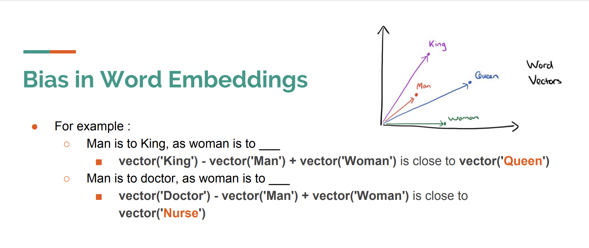
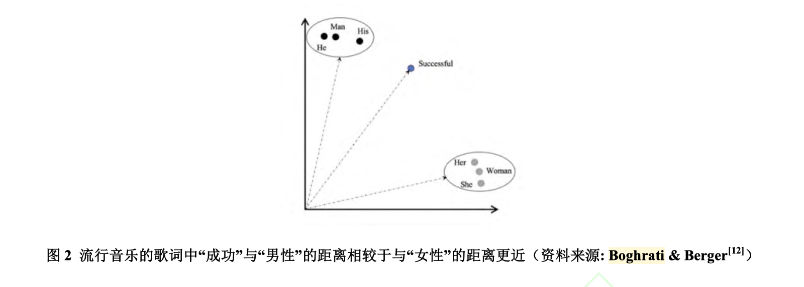
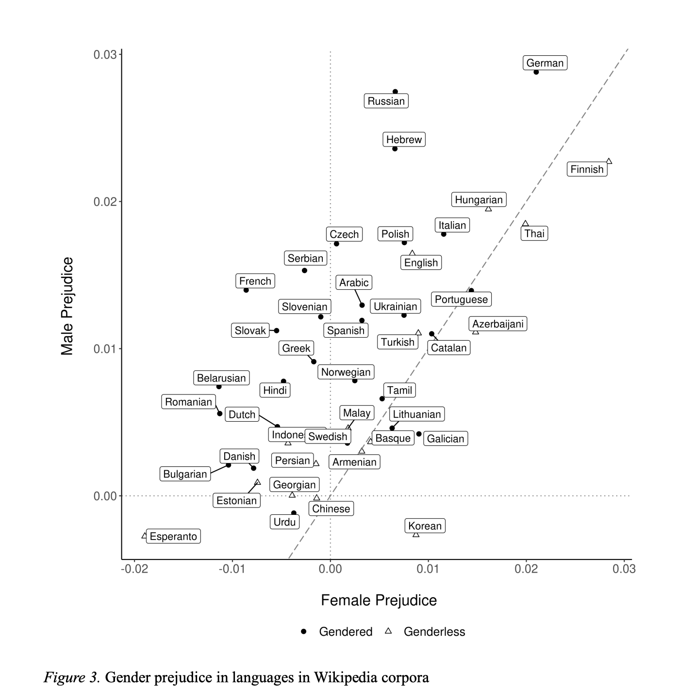
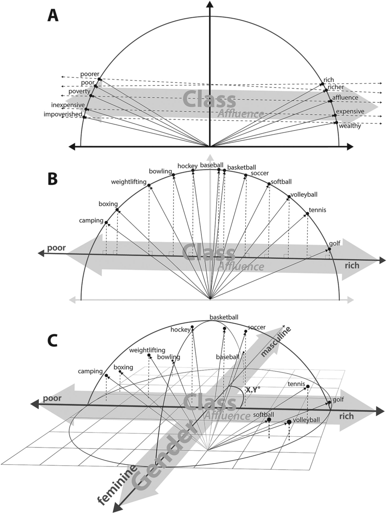
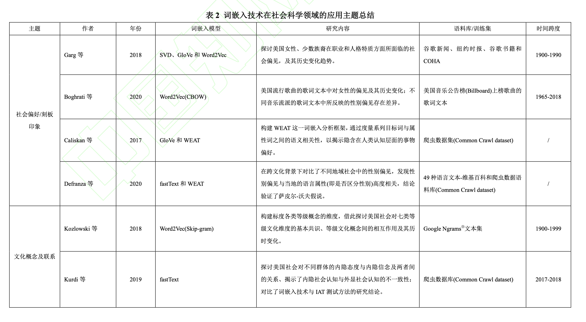
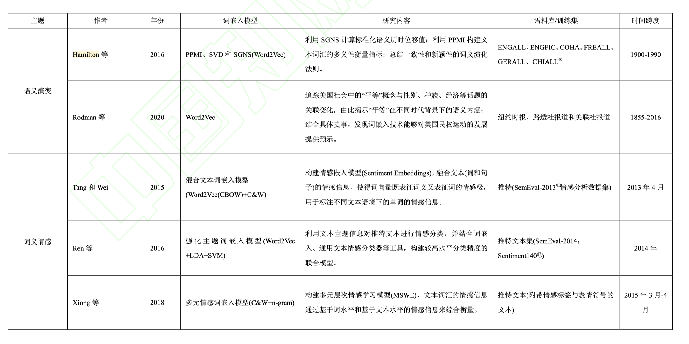
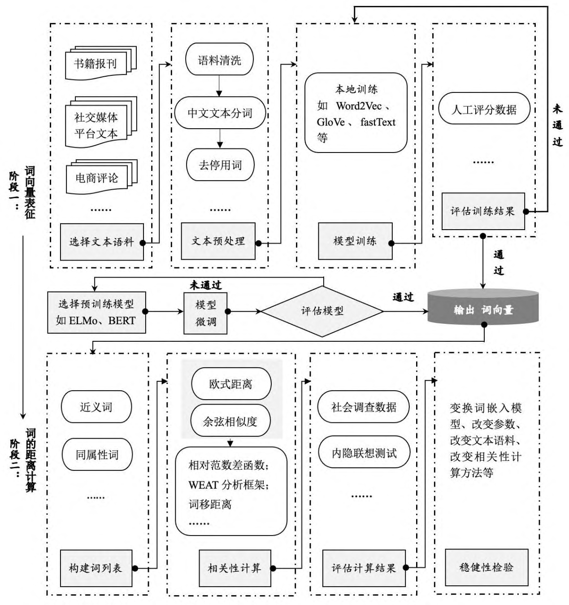
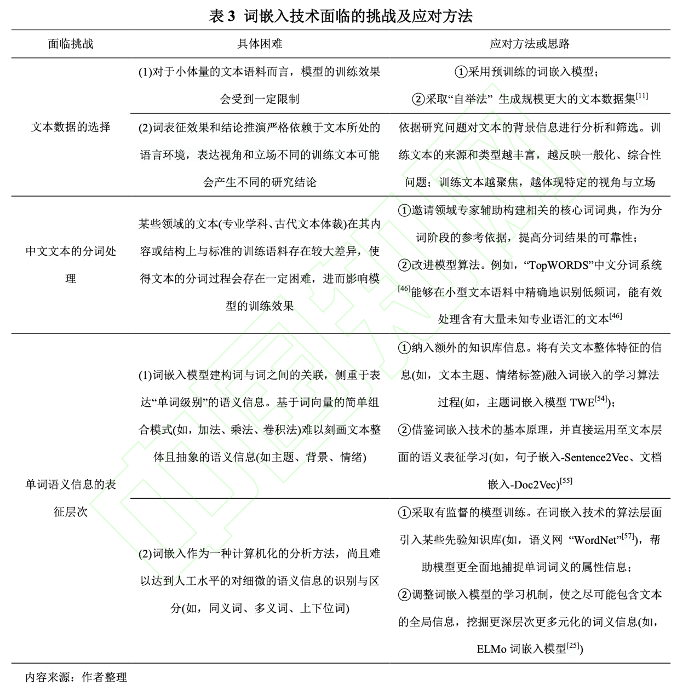

词嵌入技术是文本分析中技术含量较高，可从文本中测量出人类认知信息。而即时是有一定学习能力的人，当阅读大量文本很难察觉文中是否有内置(预置)的信息，如作者的偏见、态度、刻板印象，等人类复杂认知。词嵌入技术可以将这类难以察觉的线索挖掘、测量。
文献
本文全文摘自
冉雅璇,李志强,刘佳妮,张逸石.大数据时代下社会科学研究方法的拓展——基于词嵌入技术的文本分析的应用[J/OL].南开管理评论:1-27[2022-04-08].http://kns.cnki.net/kcms/detail/12.1288.F.20210905.1337.002.html
摘要
在大数据时代的背景下，基于大数据的分析处理技术为以“数据驱动”的社会科学研究创造了新的发 展契机。其中，词嵌入(Word Embeddings)技术借势大数据浪潮，以其高效的词表征能力和强大的迁移学习能力在文本分析领域受到越来越多的关注。不同于传统的文本分析路径，词嵌入技术不仅实现了对非结构化文本数据的表征，还保留了丰富的语义信息，可以实现对跨时间、跨文化文本中深层次文化信息的挖掘， 极大丰富了传统的社会科学实证的研究方法。文章总结了词嵌入技术的基本原理及特点，系统地梳理了词 嵌入技术的六大应用主题：社会偏见、概念联想、语义演变、组织关系、文本情感和个体决策机制。随后， 文章归纳了词嵌入技术的基本应用流程。词嵌入技术还面临文本数据的选择、中文文本的分词处理、单词 语义信息的表征层次三种挑战，文章归纳了相应的应对思路与方法。最后，基于词嵌入技术的强大适应能 力，未来研究可以进一步关注该技术在管理领域的应用前景，包括政策效应评估、用户推荐系统、品牌管 理、企业关系管理、组织内部管理、中国传统智慧与管理问题六个方面。
关键词: 词嵌入；自然语言处理；文本分析；社会科学；管理领域应用
引言
作为人类开展文化交流和情感沟通的基本载体，语言承担了重要的信息交换功能。借助 于各类语言表达形式，人们将诸如知觉、思维、态度和情感等复杂的心理活动转化成特定的 语言。 而作为语言的典型载体之一，文本既能够在个体层面上反映人们的内心活动，也能 够在组织和社会层面上反映集体文化。 因此，从文本内容挖掘个体深层次的心理活动和 人类社会的文化沿革是社会科学的基本研究路径。
长期以来，在社会科学尤其是管理学和心理学等领域，实证研究多以针对实验、问卷和结构化的二手数据的量化分析为主导，而对于非结构化的文本材料(如访谈记录)仍以质性分析为主。[5] 在大数据时代，“数据+行为+交叉学科”已成为社会科学发展的必然方向。而计算社会科学的兴起则为我们理解人类行为、探讨社会现象提供了新的研究素材、视角和手段[6] 。随着互联网技术的飞速发展，人们在网络上发表大量包含思维、情感、观点的文本信息，这些井喷式爆发的文本为“以数据驱动”的社会科学研究提供了可及的信息来源。若能对之加以利用，无疑将拓宽社会科学研究的方法。[7 - 9] 然而，社会科学领域的传统文本研究方法以人工编码为主，其时间投入过大、成本较高、客观性相对较弱等不足极大地限制了文本数据 [10] 在实证研究中的应用。 所幸的是，以自然语言处理(Natural Language Processing; NLP)为核心的计算机文本分析技术(Computerized Text Analysis)的发展为大数据文本在社会科学领域 中的应用带来了契机。 “词”作为文本的最小单元，是计算机进行文本分析的基础。在自然语言处理领域，“词” 主要以向量(vector)的形式表示。而词嵌入(Word Embeddings)技术，即是一种可以把高维词 向量映射进低维向量空间，以此来实现词义理解的计算机文本分析技术。相较于其他自然语 言技术，词嵌入技术不仅展现出了高效的学习能力，而且允许计算机从更高的意义单元(即 目标词的上下文)出发理解词义、刻画“词”之间的相对关系，因此逐渐成为了自然语言处理的重要工具，在管理学、心理学等社会科学领域取得了丰富的研究进展。相比于传统的、以人工编码和词频统计为主导的文本分析方式，词嵌入的独特优势在于：
- 借助计算机分析技术，可以在短时间内、以较低成本，实现对大规模文本数据的高效处理；
- 在挖掘文本特征和理解文本内容时，更多地依赖文本自身的分布规律，具有较强的客观性，其背后“数据驱动”的分析逻辑也使这一技术在探索性研究中具有较大的应用优势；
- 面对跨时间、跨文化比较的研究话题、以及在挖掘社会学、行为学变量及变量关系等领域展现出广阔的应用前景。
词嵌入技术已在社会科学领域得到了广泛的应用，主要包括：社会偏见 、概念联想[14] 、关系网络和判断机制[16] 等六大主题，大量研究见诸 Nature、Science、PNAS、Academy Management Journal、American Sociological Review、Management Science 等国际期刊。反观国内的社会科学领域，词嵌入方法的应用价值还未得到足够重视和讨论。据此，本文通过介绍词嵌入技术的基本原理、梳理国外社会科学领域对词嵌入的应用情况，以期帮助国内社会科学研究者了解该技术独特的应用价值，推动词嵌入技术在大数据时代背景下对我国社会科学研究方法的丰富和推动。具体而言，本文：
- 梳理了词嵌入技术原理，以帮助学者深入了解词嵌入在文本分析方面的技术优势；
- 梳理了现有文献中社会科学研究者们利用这一技术的相关应用研究，展现了在面对实际问题时可以如何利用词嵌入技术进行实证分析，以帮助学者了解该技术的适用领域；
- 总结词嵌入技术的基本应用流程，提供方法指引；
- 归纳了词嵌入技术面临的三方面挑战 ——文本数据的选择、中文文本的分词处理、语义信息表征，并提出了相应的应对思路；
- 从政策效应 评估、用户推荐系统、品牌管理、企业关系管理、组织管理与中国传统智慧和管理问题这六个方面出发，探讨词嵌入技术在以管理为代表的社会科学研究中的应用潜力和价值，以期丰富大数据时代背景下我国的管理科学研究方法。
一、词嵌入技术的基本原理
不同于基于词频统计的文本分析方法，词嵌入技术的核心特征在于从文本的全局语义信息出发对“词”进行表征学习， 即大规模利用文本中“词”的上下文信息，将文本词汇映射至高维向量空间以实现词的向量化表示，使得词向量之间既保留着“词”在语义层面的关联，又满足向量所适用的代数运算性质。 在此基础上，通过度量词向量之间的几何关系(即“距 离”)便能够刻画“词”在现实语义中的关系。 进一步地，我们利用词与词之间这种可被量化的语义关系来探讨社会科学领域下的概念之间的相似性或相关性，并由此反映特定的社会文化和认知现象，乃至刻画社会、心理变量与其它行为变量间的相关关系。因此，词嵌入技术的应用主要包含两大步骤，即首先利用词嵌入模型从文本数据中获得对“词”的向量表征，再计算词向量距离进行相关性分析。
1. 1 “词”的向量表征
“词”的向量化表征是计算机进行文本分析的基础，也是词嵌入技术的本质属性。纵观计算机文本分析的历史，词向量的表征方法主要经历了以下两个发展阶段：
第一个阶段： 假设词语之间相互独立
第一个阶段是从词典出发、基于词频统计规则对“词”的离散型表征。例如，热向量编码(one-hot vector)通过
建立基于目标文本(“猫很可爱，狗也很可爱”)的分词词典({“猫”: 0，“狗”: 1，“也”: 2，“很”: 3，“可爱”: 4})，将每个“词”都表示为一个向量，使其维度与词典长度相当，且每个元素取值为0 或 1。
“猫” = (1, 0, 0, 0, 0)
“狗” = (0, 1, 0, 0, 0)
“也” = (0, 0, 1, 0, 0)
“很” = (0, 0, 0, 1, 0)
“可爱” = (0, 0, 0, 0, 1))
这一类词表征方法虽然简单直观，但是在面对大规模文本时，词典长度的激增易造成参数空间的“维度灾难”问题(Curse of Dimension)① 。并且，粗糙的信息表征思路忽视了“词”的频率、上下文以及“词”之间的关联，使得这一类词向量无法反映“词”的语义信息。
第二阶段: 认为词语之间有千丝万缕的联系
为了提升词向量的表征质量，Deerwester 等[20] 主张从更高的文本意义单元理解文本词汇的含义。由此，分布式表征(distributional representation)[18] 成为了第二阶段的词表征方法。分布式假设(distributional hypothesis)是分布式表征方法的理论支撑，也是词嵌入技术背后的核心逻辑基础——即上下文相似的“词”拥有相似的或相关的语义，它能够反映了人类的语言使用习惯，也符合人的现实认知逻辑。[16,18,21] 人们倾向于对具有相似或者相关特征的对象产生认知关联，体现在文本层面则是相近的语言表达或高度的共现频率，即相似的上下文语境。基于此，通过分析目标词与其上下文词汇之间的统计分布规律可以学习到目标词的众多文本信息，使得词表征结果囊括文本语境的特征。因此，分布式表征的思想被广泛应用于后续的语义学习中，成为了词嵌入技术的基本逻辑。
其中，较为出色且经典的是 Mikolov 等人在 2013 年提出的 Word2Vec 模型，[18] 它标志 着 词嵌入模型 的 正 式 诞 生 。除了 Word2Vec 词嵌入模型外， Pennington 等 [23] 提出了同样具有高效学习能力的 GloVe(Global Vectors for Word Representation)学习框架，通过对词共现矩阵的矩阵分解，实 现对“词”的表征。此外，为了提升训练速度、适应海量文本学习，后 多对于词的分布式表征的改进算法，包括：fastText 算法、 谷歌的 ELMo(Embedding from Language Models)语言模型[25] 和 BERT(Bidirectional Encoder Representation from Transform) 语言模型[26]等。
在将文本信息嵌入进每一个“词”之后，我们获得了“词”的向量表示，即在词向量空间中的位置，而词与词之间的语义关联可以通过向量空间中点与点的位置距离来反映。词嵌入技 [27,28] 术下的向量具有两项重要的几何性质——“聚类”(clustering)和“并行”(parallel)。 其中，
- “聚类”性质是指，现实语义相近的“词”在向量空间中的位置也相近。 例如， “挪威”与“瑞 典”的词向量更接近，而“意大利”和“德国”的词向量更接近。
- 而“并行”性质是指，向量空 间中的词向量之间满足基本的代数运算性质，且这种运算逻辑基本符合“词”的现实语义逻辑。
[18] 例如，从语义逻辑来看，“国王(King)”和“王后(Queen)”的区别平行于“男人(Man)”和“女人 (Woman)”的区别，反映到对应词向量上即可以得到“King−Man+Woman=Queen”的代数形式。

综合以上内容可知，词嵌入虽然聚焦在“词”这一最小的文本单位上，但是看到的是丰富的全局文本语义信在“词”上的投射和体现。这不仅与传统的、基于词频的文本分析方法在逻辑上有着本质的区别，更能够为文本分析提供更深刻、更生动的洞察，构成了词嵌入文本分析技术在大数据时代的社会科学领域相关研究中的独特应用优势。
1.2 词向量的距离计算
在词嵌入领域，词向量间的“距离”是词与词之间相关程度的度量指标，是分析概念之间的相关性的基础。词嵌入技术将文本中的“词”映射为 N 维欧式空间中的“点”，“词”在空间中 的位置坐标即用其对应的 N 维向量来标识。由于点的位置反映了词语的语义，因而点与点之间的空间距离即反映了词与词之间的语义相似性，对词向量进行特定的代数运算(如加减、 内积等)能够用以度量词与词之间、概念与概念之间乃至文档与文档之间的相关性。
1.2.1 词与词之间的距离
设在 n 维语义空间中，单词 A 和 B 分别对应词向量 vA=vA1,…, vAn 和 vB=vB1,…, vBn， vA 与 vB 之间的距离计算方式主要有以下两种：
- 余弦相似度(cosine similarity)：。余弦相似度衡量词向量 vA 和 vB 之间的向量夹角的余弦值，其取值范围为[-1,1]。余弦相似度取值为 0，则代表单词 A 和 B 之间不存在语义关系；而取值越靠近 1，表明单词 A 和 B 之间具有正相关性；反之，取值越 靠近-1，则表明单词 A 和 B 之间具有负相关性
- 欧式距离(euclidean distance)：欧式距离越小表明单词 A 和单词 B 在词向量空间中的位置越近，之间的语义关系越强；反之，欧式距离越大表明单 词 A 和 B 语义关系越弱。
1.2.2 概念与概念之间的距离
在词嵌入分析领域，一个概念是由一系列“相关词”组合而成，例如，“女性”概念可以通过“女人”、“女生”、“母亲”等名词来表达。而在对比不同属性概念(如“女性”vs.“男性”与“智慧”)之间的相关性时，需要逐个计算概念间的相对距离(“女性”与“智慧”的距离 vs.“男性”与“智慧”的距离)。Garg 等[13] 、Caliskan 等[17] 分别构建了以下两种相对距离的计算方法，并为众多后续研究所采用：
-
相对范数差函数(relative norm distance)：
- $$vm∈Mvm−vA−vm−vB $$
-
该函数用于衡量两项目标词概念与某一项特征概念的相对距离。其中，M 代表特征概念(如“智慧”)，vm 为所属概念的相关词向量(如“聪明”)；vA 和 vB 分别代表两类目标词向量(如“男性”vs.“女性”)。该函数的含义为：在“男性”和“女性”两类群体中，哪一类群体与“智慧”这一概念更相关。若函数值为正，则代表“女性”与“智慧”更相近；若函数值为负，则代表“男性”与“智慧”更相近；若函数值靠近 0，则表明“智慧”不存在明显的性别偏向。
-
词嵌入相关性检验 (Word Embeddings Association Test; WEAT)：
- $$s(X,Y,A,B)=vx∈Xs(vx,A,B)−vy∈Ys(vy,A,B)$$
- $$s(vw,A,B)=meanva∈Acos(vw,va)−meanvb∈Bcos(vw,vb)$$
- 该框架用于衡量两组目标词 X,Y(Target Words，如“男性”vs.“女性”)与两组属性词 A,B(Attribute Words，如“事业”vs.“家庭”)在语义上的相对距离差异，其中 vw 为所属概念的相关词向量(如在描述“男性”概念时，人们往往会使用“男生”、“父亲”、“男人”等词语)。s(vw,A,B)表示单词 vw 与两类属性词 A 和 B 的相对距离，正值代表其与 A 属性距离更近、语义更相关，反之则反；而 s(X,Y,A,B)则衡量了两项目标词 X,Y 和两项属性词 A,B 相对距离的差异，即在 “ 男性 ” 和 “ 女性 ” 两类群体中， 哪一类群体与 “ 事业 ” 或 “ 家庭 ” 的文化概念更相关。 若s(X,Y,A,B)为正值，则表明相比于“女性”，“男性”与“事业”的语义相关性更高，反之则表明“女性”与“事业”的语义相关性更高。此外，WEAT 框架还提供了相应结果的显著性检验方式以及效应量指标。
-
文档与文档之间的距离—词移距离(Word Mover’s Distance) minT≥0i,j=1nTij∙ci,j, s.t. jnTij=di , ∀iϵ1,…,n
-
除了概念间的相关性分析，我们可以通过文档间的相似性来探讨如文本主题、个体及组织之间的相关性问题，Kusner 等[31] 提出“词移距离”这一计算方法能够实现文档间的相似 性度量。词移距离即一个向量空间移动到另一向量空间所需的最小距离，通过对两个向量语 义空间中所有词向量间的欧式距离进行加权求和，以此来衡量两个文本间的相似性，如上式 所示。其中，c(i, j)为词向量间的欧式距离；Tij 为词向量之间的权重(由 TF-IDF② 计算加权值)。 函数值越大代表两个文本的相关程度越低，反之越高。
二、词嵌入技术的优势
传统的社会科学研究通常需要借助科学实验、社会调查和人工编码等方法，依赖于专家学者的领域知识和实践直觉，存在主观性较强、耗时、耗资源的缺点。 另外，传统的社会科学研究局限于小样本数据和历史数据的不足，通常关注当下的、有限范围的社会情景， 难以进行跨时间、跨文化的分析。 反观，以词嵌入为代表的计算机化的文本分析：
- 可处理大文本数据，不仅极大地节省人力和时间投入，而且可以拓宽现有社会科学研究的素材；
- 能够利用现有数据和先验知识改进学习算法，可拓展性和重复性强；
- 能依据文本内在的分布规律和领域知识，挖掘人们内隐层面的认知信息，结果更加客观真实；
- 能够从大规模文本中挖掘代表整体社会的认知，尤其擅长进行跨时间、跨文化的文本研究，结论不仅具有广泛的样本代表性，而且可以展示相关文化概念、思想观念等研究对象的纵向历时演化。 这些优点极大地丰富了社会科学的研究方法，拓展了社会科学的研究视野。传统的社会科学 研究方法与词嵌入技术的具体区别见表 1。
表 1 传统的社会科学研究与词嵌入技术的区别
| 对比维度 | 传统的社会科学研究路径 | 基于词嵌入技术的社会科学研究路径 |
|---|---|---|
| 研究工具 | 问卷、访谈、实验、案例分析等 | Word2Vec、GloVe 等词嵌入模型，以及词向量、概念及文本的相关性计算 |
| 方法依据 | 基于实践经验和严格的理论推断，依赖于特定学科内专家学者的领域知识和实践直觉，是以人为中心的研究方法；围绕研究假设进行数据检验的分析路径 | 基于语言文本来理解文化概念和思想观念，综合利用社会科学理论、计算机科学等探讨社会、心理和行为层面的问题，是人智与计算机相结合的分析方法 ；不依赖严格的假设，利用数据挖掘展开探索性的研究 |
| 检验标准 | 大部分研究结论缺少严格客观的评断标准，主观性较强 | 有多项较为成熟的指标及评价流程，具体包括：检验词嵌入模型的训练效度 ( 模型在特定的测试任务集上的表现 ) 和检验研究结论的外部效度(将结论与其他社会调查数据、其他研究方法的结果展开对比) |
| 数据来源 | 调研记录、实验数据、二手数据、文献等；受限于成本投入，数据来源较为单一且体量较小 | 数据来源广泛，能够熟练处理包括会议记录、网络文本、新闻书籍等非结构化的文本数据；在处理大规模、跨文化、跨时间的文本数据时有极大的优势 |
| 信息层次 | 以基于自我报告的外显认知为主，在获取被访者内隐认知时依赖于间接的方法设计；研究较大地依赖于样本选择，结论在跨时间、跨文化上的代表性有限 | 允许研究者直接挖掘文本所反映的内隐社会认知；研究较多从社会、集体层面的文本范围着手，结论具有较强的代表性和普适性 |
| 其他特点 | 应用过程中耗时长、成本较高；主观性较强；结论的可复现性较弱 | 针对大数据文本的无监督训练、时间人力投入小；客观性较强；结论的可复现性较强 |
三、词嵌入技术在社会科学领域的应用话题
3.1 社会偏见/刻板印象
文本语言能够反映人类对世界的认知和态度，基于词嵌入的文本分析方法可以有效地挖掘社会偏见和刻板印象。Garg 等[13] 采用词嵌入技术分析了来自纽约时报、谷歌新闻、谷歌图书及美国历史文本库(Corpus of Historical American English; COHA③ )的文本数据，揭示了 1900～1990 年间美国社会在性别和种族两大议题上的刻板印象及其历史变化。Garg 等[13] 首先以十年为单位将文本数据分为 9 份，并针对每一份文本数据使用词嵌入技术，以获得“词” 的向量表征。然后，他们整理了相应概念的单词列表，其中包括：与“性别”维度相关的“男性”词汇[如 he]和“女性”词汇[如 she]；“白人”词汇[如 Harris]、“亚裔”词汇[如 Huang]和“拉丁 裔”词汇[如 Ruiz]。进一步，他们构建了相对范数差(relative norm difference)函数，用以计算 一组词向量(如“男性”vs.“女性”)与目标词(如专业工作)的相对距离，以此度量社会刻板印象 的程度。Garg 等[13] 发现近百年间在美国社会的认知中始终存在着较为明显的性别偏见和种 族偏见。例如，“女性”往往和护士、保洁、舞者、秘书等职业联系更为紧密，而与工程师、 木匠、技术人员等职业更为疏远。此外，亚裔姓名和教授、科学家、化学家和工程师等学术职位联系更紧密，白人姓名往往与警察、统计学家、摄影家等职位联系更紧密。通过纵向分析概念间距离随时间推移的动态演化，Garg 等[13] 发现，这两类刻板印象随着时间呈减弱势 态，结合相关社会科学理论和历史事件，他们进一步提出 60、70 年代的美国民权运动是改善刻板印象的关键事件，而基于词嵌入的概念间相对距离也如实地反映了美国民权运动对于 国民性别、种族认知的深刻影响。
作为文化的产物之一，歌曲也能反映社会认知中的偏见/刻板印象。Boghrati 和 Berger[12] 利用 Word2Vec 词嵌入技术，挖掘了自 1965 年至 2018 年的近 60 年间美国公告榜(Billboard) 上流行歌曲歌词文本中所隐含的性别偏见。一方面，他们在流行音乐中发现了显著的“厌女症(misogyny)”刻板印象(如图 2)，相比“男性”词汇，人们更少将“女性”词汇和“能力/ 成功/热情”等具有积极属性的词汇相关联。但另一方面，歌曲中所反映的性别偏见随时间的推移呈现逐渐减弱的趋势。进一步地，Boghrati 和 Berger[12] 通过控制歌曲创作者的性别因素，发现男性作词人是影响歌曲“厌女症”现象变化的关键因素。

为了检测词嵌入技术是否能够有效挖掘文本中的社会偏见，Caliskan 等[17] 对比了词嵌入模型和内隐联想测试(Implicit Association Test; IAT)④ ——一种社会科学领域中最常用的社会 偏见/刻板印象等内隐认知的测量方法—的差异。虽然 IAT 能够有效捕捉个体的社会偏见的内隐认知，但是该方法需要严格的实验环境、耗时较长且测量样本往往受到时间和空间的局限。Caliskan 等[17] 利用 GloVe 词嵌入模型构建了 WEAT(Word Embedding Association Test) 分析框架，并利用这一框架研究了 8 项内隐认知，如“科学-男性”和“艺术-女性”，并将其与 基于 IAT 的研究结果进行了对比。[17] 他们的研究表明，基于词嵌入技术的结论与基于 IAT 的结论具有高度且稳定的一致性。Caliskan 等[17] 进一步指出，在未来的内隐态度研究中，词嵌入技术不仅能够作为 IAT 测量方法的补充，更能够在样本代表性、研究成本和研究视野等方面展现出 IAT 所不具备的独特优势。
除了探讨社会偏见与刻板印象的跨时特征之外，词嵌入技术还适用于跨文化的对比分析。 Defranza 等 [33] 利用词嵌入技术探讨了不同地域在性别偏见方面的程度差异。 他们利用 fastText 模型和 WEAT 分析框架， 从 49 类不同语种的文本中分别挖掘不同社会文化下的性别偏见现象。 结果显示，当一个地区的性别语言(Gendered language)——即语言中更加区分词汇的性别属性和使用者的性别身份(如泰语、芬兰语)更强时，该地区的性别偏见更加明显(图 3)，具体表现为男性与积极属性词汇的关联性更强，而女性与积极属性的联系更弱。 这一结果在一定程度上验证了萨皮尔-沃夫假说(Sapir-Whorf hypothesis)，即语言能够塑造的思维和认知。

3.2 文化认知
历史无法复刻，但承载历史痕迹的文本资料能够帮助人们窥探特定时代背景下的文化内涵。Kozlowski 等[28] 利用词嵌入技术分析了自 1900～1999 年来 100 余年间公开发表的书籍， 探讨了 20 世纪美国社会对七大等级文化(财富、道德、职业、性别、教育、品味、身份地位) 的共识和演变规律。首先，作者利用 Word2Vec 模型，构建了一系列标度等级文化维度(如“贫 穷-富有”、“道德-不道德”、“男性-女性”等)的词向量空间(如“性别-财富”、“职业-道德”、“品 味-职业”、“教育-地位”等)。进一步，作者将一系列目标词分别映射进相应的等级维度空间， 以此标度这些目标词的多元等级属性。例如，在被映射进如图 4 所展示的“性别—财富”等级 维度空间后，“volleyball(排球运动)”一词表现出更靠近“feminine(女性气质)”和“rich(富有)”的 等级特征。此外，标度不同等级维度的向量之间的夹角也具有一定的社会文化含义。例如， “教育”与“道德”和“品味”的相关性较强且保持历时的稳定性，但与“职业”这一维度的相关性 相对较弱，这说明教育水平的提升能够提升人的修养和品味，但对职位状态和等级(如“失业” 和“就业”)的影响较小。Kozlowski 等[28] 的研究结果表明，词向量不仅可以反映特定概念间的语义关联和相互作用，还能够用于探讨多元文化维度之间的语义结构，从而推动实现更高层次构念的表征。

作为文化概念的关键形式，社会认知(social cognition)是人们对各种社会刺激的综合加工过程， 是人们的社会动机系统和社会情感系统形成变化的基础 。
社会认知包括社会信念 (social belief)和社会态度(social attitude)。而根据内隐—外显双系统理论， 社会认知可进一步分为外显社会认知(explicit social cognition)和内隐社会认知(implicit social cognition) 两类
- 外显社会认知强调个体可以通过自省的方式(如问卷法)报告的社会认知
- 内隐社会认知描述个体无法内省的、潜意识层面的社会认知。
然而，受限于现有对内隐认知的挖掘手段，有关内隐信念 (Implicit belief，如“亚洲人很聪明”)和内隐态度(Implicit attitude，如“我喜欢亚洲人”)的关系，已有研究要么将其混为一谈，要么将其作为互不干涉的独立构念。为了厘清该问题，Kurdi 等[14] 利用基于预训练的 fastText 词嵌入技术，分析了内隐态度和内隐信念的关联，并对比其与外显态度和外显信念的差异。具体而言，基于被试自我报告的实验结果显示，个体的外显态度与外显信念存在方向上的不一致性，例如，亚裔群体常被白人给予负面的评价(外显态 度)，但在智商、能力方面被认为有突出优势(外显信念)；而基于词嵌入技术的分析结果则表 明内隐态度与内隐信念具有一致性，内隐态度驱使内隐信念的产生。[14 ] 例如，白人群体有 较高的自我评价(内隐态度)，也认为本群体的智商高于亚裔群体(内隐信念)。另外，Kurdi 等[14] 发现人们对同一类属性词的认知也存在差异，例如，人们倾向于认为“book-smart(有学 问的)”优于“street-smart(生存力强的)”。综合可知，词嵌入技术可以作为挖掘文化概念认知以及社会认知的有效工具。
3.3 语义内涵演变
语言的涵义会随着时代发生改变，而词嵌入技术的一大突出优势即表现为处理跨时段的大文本数据。文本语言的运用具有系统规律性，[35] 词嵌入模型训练生成的词向量能够有效 表征词的语义信息，通过针对来自不同历史时段的文本训练词嵌入模，有助于学者在时间维度上分析词义演变。Hamilton 等[36] 通过测量目标词的向量表示的时间位移值，来描述历史文本中高频词汇与多义词汇的词义历时变化。例如，如图 5 所示，“gay”作为一个多义词，在 1900 年代的文本中和“cheerful(开心)”和“frolicsome(玩闹)”词义更接近，而到 1990 年代则与“homosexual(同性恋)”、“lesbian(女性同性恋)”等更接近。进一步，Hamilton 等[36] 依据词嵌入技术的分析结果，提出了两条语义演化法则：(1)一致性，高频词汇会保持词义相对一致的历时演化规律；(2)新颖性，多义词汇的语义演化会更加快速。

除了对普遍意义上的词汇含义的演变规律进行探讨，某些具体词汇的演化情况同样引起了学者们的关注，尤其是那些能反映特定文化背景或时代发展的词汇。 Rodman 等[11] 基于1855～2016 年间的纽约时报、路透社报道、美联社报道三大新闻文本集，挖掘并追踪了美国一个多世纪以来围绕“平等”一词的词义演变，其中包含了使用环境、指代对象等。他们发现，在上世纪 50 年代之前，即美国民权运动前，“平等”的词义与“社会”话题相关的词汇的关联度整体较高，但随着历史发展呈现减弱趋势，这一结果与美国民权运动前普遍存在的社会不公平现象相符合(如种族歧视)。而自上世纪 70 年代，即民权运动基本结束以来，“社会”与“经济”、“教育”等概念下的词汇的关联程度不断增强，反映了本世纪以来美国社会对“教育公平”，“经济公平”等热门话题的高度关注。可见，基于词嵌入的文本分析能够敏锐地捕捉到社会文化演变的信息线索，并能为社会、文化等领域的运动发展提供预示。
3.4 文本情感分析
文本信息不仅包含词义，还表达情感。现有部分词嵌入模型在关注语义语法层面的表征 的同时，还进一步关注了词的情感信息，尤其是某些单词具有相似的上下文环境但所含的情 感态度截然相反 ( 如 “good” 和 “bad”) 。 例如， Tang 等 [37] 提出了 情感嵌入模型 (Sentiment Embeddings)，该模型不仅可以如词嵌入模型一样反映词义信息，还能识别词所包含的情感 信息，进而可以对文本(如在线评论)中的情感信息做出推断。
情感的丰富性和语言的灵活性使得单词在不同文本环境下会呈现出差异化的情感特征。 例如，“I’m gonna put something offensive to some people.”中的“offensive(冒犯)”一词在该句话 中带有消极负面的情绪；而“#FSU offensive coordinator Sanders coached for Tennessee 1st [37] #BCS title game.”中的“offensive(矛盾)”一词则不含明显的情感信息。 Xiang 和 Zhou[38] 藉此 指出，在推断词的情感信息时加入对文本 主题(topic)的考量将有效提高情感推断的准确性。 Ren 等[39] 基于 Word2Vec 词嵌入模型，结合主题模型(Latent Dirichlet Allocation; LDA)的方法， 提出了主题增强的词嵌入模型(Topic-Enhanced Word Embeddings; TEWE)。作者使用支持向 量机(Support Vector Machine; SVM)作为文本情感分类器，发现 TEWE 模型在文本情感分类 任务有突出表现。 例如，该模型能更有效地区分含有负面情感态度的词汇(如 insane)与正 面情感词汇(如 sane)的差异。在此基础上，Xiong 等[40] 进一步考虑了文本情感信息的多元化 特征 ， 构建了多元层次情感词嵌入模型 (Multi-level Sentiment-enriched Word Embeddings; MSWE)。他们发现，在标注“积极[#happy; :-)]—消极[#angry; :-(]”的情感标签任务中，MSWE 情感嵌入模型能够实现 85.75%的分类水平，表明基于词的情感表征能够更有效地挖掘文本 背后的情感。
3.5 组织关系分析
词嵌入技术在挖掘社会内隐认知方面展现出强大的效力，因而词嵌入技术可用于挖掘不 同组织在价值观和意识形态层面的关联，以此作为组织关系的推断依据。在此思路基础上， Spirling 和 Rodriguez[41] 采用 GloVe 和 Word2Vec 的词嵌入模型，分析了美国共和党和民主党两大政党在其各自的公开发言稿中对部分政治议题的所表达的态度。例如，对于“堕胎”议题， 两政党的理解存在较大争议：民主党认为“堕胎”是一种自愿选择，而共和党认为“堕胎”与“绝 育”、“公平”的话题相关；对于“税收”议题，两政党的理解则存在更多共识。由此可见，词嵌入技术不仅可以帮助我们了解政党组织在哪些政治议题上存在冲突，还可进一步衡量不同党派的政治关系。
Rheault 和 Cochrane[42] 分析了英国、加拿大和美国 20 世纪以来的议会记录文本，并依 据政党派别关系构建了“党派嵌入”(Party Embeddings)模型。学者利用词嵌入模型量化了不同党派在不同年代的议会观点中与特定“意识形态”维度(如自由 vs.保守、北部 vs.南部)的相关性，从而对比不同党派组织的意识形态差异。从整体上看，美国民主党的意识形态更靠近自 由派思想(如“民权”、“种族”、“枪支管控”)，而美国共和党的意识形态更具保守派和南部 [42] 州色彩(如“官僚”、“果农”、“烟草”)，且两党的意识形态差异随着时间不断扩大。 同样地， 对于加拿大，新民主党派与联盟党在意识形态上的政治冲突最为严重，魁北克政团与联邦主 [42] 义政团在事关“联盟”的政治议题上观点不同。 Pomeroy 等[15] 利用 GloVe 词嵌入模型分析了各个国家在联合国论坛的公开演讲文本，并使用词移距离(Word Mover’s Distance)来量化国 家讲演文本间的总体相似性，以此来反映国家立场及偏好的相似性。 作者发现，基于词嵌入技术的分析结果能够很好地反映国家间的政治关系。例如，虽然土耳其和希腊两国在投 票议程中表现出态度相似性(即一致的国家关系)，但实则两国在当年发生了边境军事冲突， 而这一冲突能从两国的联合国讲演文本中捕捉到线索。本研究指出，有关词嵌入在主体网络 关系的应用集中于党派关系和国际关系的研究，未来研究还可以考虑分析其他情景下的主体关系，如社交网络关系、品牌竞争关系、组织内部关系等。
3.6 个体的判断与决策心理
决策结果和决策信息线索之间具有表征关系，因而词嵌入技术能够通过挖掘概念间的内在关联，在一定程度上揭示个体在决策任务中的思维过程和决策依据。Bhatia[16] 在自然语言处理的框架下，验证了以往决策研究中的相关性判断机制，即人们在进行判断性任务(如：“A 多大可能属于 B?”)时，会出于直觉性心理去思考问题与选项间的相关性或相似性，并以 作为判断依据。具体而言，作者综合 Word2Vec、CCA、GloVe 几项词嵌入技术，基于谷歌 新闻和 GigaWord 文本库⑤ 训练生成词向量。进一步，作者通过对句子中每个“词”的向量求 取平均值，分别对判断问题(如“在以下的两座德国城市中，哪一个人口最多？”)与选项(如“汉堡”和“科隆”)实现表征。作者依据两者间的语义相关性来预测答案选项的概率分布，并据此模拟一般决策者的选择。例如，针对上述问题，基于词嵌入模型的预测结果为“汉堡”，与被试的选择高度相似。此外，词嵌入模型在其它测试任务(如经典的“Linda 问题”⑥ )下也预测了 [16] 决策者的选择倾向， 这一现象与代表性启发理论(representativeness heuristic)——一种依赖人的相关性感知进行识别和判断的心理决策过程——相符。这说明词嵌入模型在很大程度上 能够解释人的相关性判断机制， 甚至对其中常见的认知偏差 ， 如 合取谬误 (conjunction fallacy)⑦ 、基础概率忽略(base rate neglect)⑧ 也能够予以反映。[16] 实证结果表明，词嵌入技术为我们理解人的直觉性判断心理提供了信息参考，能够帮助实现相对精准的决策预测。
另外，个体的风险感知和风险判断也是个体决策研究中的重要组成部分。Bhatia[43] 利用词嵌入技术探讨了人们面对各类风险源时的风险评估机制。作者通过基于谷歌新闻文本的预 训练 Word2Vec 模型，量化了不同风险源(技术性风险源：“新兴技术”、“能源”等；活动性风 险源：“运动”、“职业”等)与相关概念的语义联系，进一步 揭示了人们进行风险评估时的知 识表征内容(即内隐联想)。例如，当评估药物风险时，人们在潜意识里会联想到“毒品(drug)”、 “无序(disorder)”等具有高风险含义的概念(如图 6a 的词云图)；而评估运动风险时，人们容易 联想到“碰撞(crash)”、“斗争(combat)”等风险事件(如图 6b)。作者弥补了以往有关风险评估 的研究方法中难以预测样本外数据(如新型风险源)的缺陷，展现了词嵌入技术在理解和预测个体判断决策机制中的应用优势。
⑥ “Linda 问题”是指“琳达，31 岁，单身，一位直率又聪明的女士，主修哲学。在学生时代，它就对歧视 问题和社会公正问题较为关心，还参加了反核示威游行。请问琳达更有可能是下面哪种情况？”有两个选 项：“A.琳达是银行出纳；B.琳达是银行出纳，同时她还积极参与女权运动”。相比于 A 选项，B 选项所 塑造的女性形象更贴近问题所提供的信息，因而人们会倾向于选择 B 选项。
⑦合取谬误是指人们总是认为两个事件的联合出现比只出现其中一件事的可能性要大。以“Linda 问题”为例， 人们会更多地选择 B，虽然从实际概率角度来讲，B 选项的概率应低于 A 选项。
⑧基础概率忽略是人们在进行主观概率判断时倾向于使用当下的具体信息而忽略掉一般常识的现象。
 
四、词嵌入分析的基本流程
词向量的表征学习存在两条路径：一是采用本地化的训练模型(local-trained model)。二是使用预训练的词嵌入模型(pre-trained model)。针对第一条路径，通常需要经历如下预处理和模型训练步骤(见图 7)：
4.1 选择合适的语料库(corpus)
语料库是用于训练词嵌入模型的文本集，“词”的表征效果以及后续的相关性分析依赖于训练文本的规模、质量及其所处的语言环境。对文本语料的选择需严格依研究者的具体问题而定，使研究主题/情景与文本主题/情景相对应，[41] 进而推动单词间的语义关系聚焦于特定的领域和视角上。例如，以探讨社会文化现象的研究可以选择新闻时报、社交媒体动态等社会文本作为主要语料；探讨消费者心理及行为的研究则可以将线上评论等商业沟通文本作为语料；关注组织行为的研究则以会议 记录、公司年报等组织内部的官方文本为主。
文本数据的获取主要有以下三种途径：
- 第一， 国内外由政府、企业及其他组织或个人提供的公开的、已初步整理规范的文本数据库。如， 人民日报文本集(1946 年至今) ⑬ 、谷歌图书(包含 1500 年～2012 年期间公开出版的书籍，约占人类历史所有出版书目总数的 6%) ⑭ 、亚马逊评论集(包含 1996 年～2018 年亚马逊平台用 户对近 30 个产品品类的超过 2 亿条评论) ⑮ 、维基百科数据库(包含来自 400 多万篇文章的近 19 亿个单词的维基百科全文) ⑯ 等。
- 第二，借助“爬虫”程序收集文本数据。根据研究需要， 研究者可以在特定的网站上爬取一定的文本。例如，众筹平台的项目申报文本材料、微博平台的历时推文、论坛用户间的互动文本、企业员工在 Glassdoor ⑰ 等职业资讯网的日志评论等文本。
- 第三，纸质版文本转换成电子文本。必要时，研究者还可以将纸质文本录入为电子文 本形式，如员工日记、会议记录、线下心理咨询文稿等。
4.2 语料预处理(pre-processing)
常规的预处理流程包括：
- 删除与文本内容无关的标点符号、特殊字符(如：数字，空格符，分行符，“©”)和其它停用词(如：代词、连词)。
- 此外，中文文本的预处理中还需要对文本分词 (segmentation)，从而将语料处理成由“词”这一最小的文本分析单位所构成的列表(如将语 句“我很开心”分词为“我”/“很”/“开心”)。现今常用的中文分词工具有“Jieba”、“HanLP”、 “THULAC”、“TopWORDS”等。
4.3 模型训练
在预处理后的语料文本中训练词嵌入模型，最终实现文本词的向量表征。当前主流的词嵌入模型有 Word2Vec、GloVe、fastText 等， 而在 Python 环境下，大量与自然语言处理相关的成熟的开源工具包(如，Gensim)中提供了相关的算法模块，并允许研究者对相关参数(词向量的维度、单词上下文的观测窗口的大小 等)进行调整。
此外，基于词嵌入模型的迁移学习能力，也可直接使用预训练的词嵌入模型(如，谷歌 的 GloVe 和 BERT )，从而获得基于其它大型语料库充分训练得到的词向量表示，并根据自身的文本特征对模型或表征结果进行微调(finetune)。但无论采用何种词向量表征路径， 在正式的词向量相关性分析之前，都有必要对词嵌入模型的训练结果，即词向量的表征效度进行评估。常见的评估方式是通过与人工标注的词相关性评分进行对比，检验二者是否一致， 以此判断词嵌入模型是否能够捕捉一般化的语义关系。目前，已有大量成熟的针对“词对” (word pairs)相似性的人工标注的测试集，如 MEN-3000(英文)[47] 、Wordsim240/297(中文)[48 ] [12,41]。
词嵌入模型训练完成后，可以进一步依据研究目的进行词向量间的“距离”的几何计算， 主要包括词列表构建、相关性计算、有效性检验和稳健性检验四个步骤 。
- (1)构建词列表。 在词嵌入的文本分析中，特定概念通常由一系列近义词或同属性词列表构成。例如，在 Garg 等[13] 的研究中，他们构建的“男性”概念词列表包括“male”、“men”、“father”、“brother”等 20 个单词。
- (2)计算词向量的相关性。针对具体研究问题，衡量“词”或者概念之间的语义关联(即 词向量间的“距离”)，主要包括余弦相似度(cosine similarity)、欧式距离(euclidean distance)两 种基本的计算方法(详见上文第一部分内容)。
- (3)有效性检验。针对词嵌入的分析结果，我们 有必要进行进一步的检验，以保证结论的可靠性以及方法的有效性。具体包括两类检验方法： ①与对应年代的相关社会调查数据 (如，社会职业性别占比调查、社会偏见大调查 ) [13,49-51] 进行比对，以检验词与词的相关程度、变化是否与相应的指标数据、社会事件相吻合； ②与其它研究方法进行对比，如内隐联想测试(IAT)、主题模型(LDA)，以检验词嵌入模型能 否重复已有研究结果。[11,14]
- (4)稳健性检验。作为一种无监督的探索性分析方法，词嵌入的 分析结果会因文本、模型等因素的不同而产生差异。通过变换词嵌入模型、参数、文本语料 或相关性计算方法，以检验研究结果的一致性。稳健性程度越高则代表基于词嵌入分析方法 的结论可靠性越高。

五、词嵌入分析方法的挑战与应对
作为一种计算机化的文本分析方法，词嵌入技术在文本数据的预处理、文本表征效果等方面有一定的条件限制，因而该技术面临着以下几个方面的挑战。学界一直致力于词嵌入分析方法的完善，并就下述问题提出了针对性的应对方案和解决思路，详见表 3。
(1)词嵌入技术的分析效果依赖于文本数据的体量、质量和语言环境。
①通常来说，文本数据规模越大越有利于词嵌入学习和提取更充分的语义信息，[11] 而体量较小的文本，可能会限制词嵌入模型的训练效果，难以将文本的全局语义信息嵌入到单词上。[11,18] 对此，Rodman[11] 提出了两种解决思路：一是采用预训练的词嵌入模型。预训练词向量通常基于超大型文本数据训练而来， 使模型具备较好且广泛的语义表征能力。 二是采取“自举法”(Bootstrapping)⑱ 。通过该方法生成规模更大的文本数据集，并针对不同的抽样过程生成不同的词向量结果，随后求取其平均值以增强词向量的稳定性和有效性。
②除此以外，文本语料的选择应考虑到其依存的文本情景、社会文化环境等背景信息。文本所依存的语言环境、文化观念和观点立场在很大程度上影响着文本词汇的分布方式(即单词上下文)，因此利用不同文化背景的文本训练词嵌入模型，可能会产生不同的研究结论。Spirling 和 Rodriguez[41] 对美国国会议事文本的分析所示，不同的党派组织对同一政治 议题的理解存在“冲突”(如，“堕胎(abortion)” & “福利(welfare)”)。再如，在研究组织员工的 幸福观时，企业的官方书面文本(更具指导性和应然性)以及员工的口述文本(更具真实性)可 能潜藏不同的结论。然而，如何权衡和选择合适的语料、如何处理不同文本下的结论不一致 等问题仍缺乏统一的解决标准。就学者的普遍实践来看，文本选择需要“有的放矢”，即依据 研究问题对文本的背景信息(如，表达视角、代表阶层、文本性质 )进行必要地分析和筛选， 在扩大语料库规模和类型的同时也要尽可能使之聚焦在同一视角和语境上。[11,28,41]
(2)“词”是词嵌入分析的基本单位，中文文本的分析需要预先进行“分词”处理。
对于某些特定领域的文本而言，如专业学术文章、古代汉语文本等，由于其文本内容及结构与标准的训练语料存在较大差异，[46] 使得文本分词的过程存在一定困难。近年来，大量学者就优化文本预处理技术展开了探讨，例如，Deng 等[46] 开发了“TopWORDS”分词软件，在小型训练文本中实现了部分低频词的精确识别，亦能处理含有大量未知专业语汇的文本，该方法的有效性在古汉语文本的分词任务上得到了进一步验证。在突破文本预处理中的困难后，可以应用词嵌入的实践流程对文言文展开分析，探讨古代社会文背景下的社会科学课题，如围绕权力、阶层、性别、宗教等的社会规范以及其它社会价值观念的演变。
(3)在由“词”构成的文本结构中，词与词之间的组合搭配能够创造出更加丰富且抽象的语义信息，这一类信息难以通过词向量间简单的结构化公式运算来体现。
词嵌入技术对文本中的“词”展开语义分析，所建构的是词与词之间的关联，侧重于表达“单词级别”的语义信息。因此，基于词向量的简单几何计算难以直接反映 “单词级别”以外的语义信息，[18,5 2 ] 如词组概念、段落含义、文本主题等。学界也在积极探索“组合式分布语义”的实现方法，即如何利用词表征的组合实现对短语、段落和文档的有效表示。[18,53 ] 在自然语言处理领域，以LDA 为代表的主题模型从整个语言系统分布中学习“词”的含义，侧重于建模词与文档的关系，体现的是词的主题信息。相比于词嵌入模型下的单词之间的关联，包含主题特征的词向量之间能够反映相对丰富的语义关联。鉴于词嵌入模型具有较强的扩展能力，大量学者针对词嵌入模型的算法和训练过程进行优化，即将有关文本整体特征的信息或其他的领域知识融入词嵌入的学习过程。例如，Liu 等[54] 基于 Word2Vec 词嵌入模型，并结合 LDA 算法，使词向量包含更多的主题特征，如 “apple(苹果)”在电子产品的背景信息下表示“苹果公司”，而在食品背景信息下表示“苹果”这 类水果。此外，词嵌入技术的基本原理在文本表征领域也得到了长足发展。例如， Le 和 Mikolov[55] 将 Word2Vec(skip-gram)的算法运用至句子和短文本的表征学习；词嵌入模型界的 新秀——BERT 模型，能够有效表征句子等“单词级别”以上的文本语义概念，推动了对更 高文本单位的关系层面的理解。
(4)传统的社会科学研究方法具备词嵌入技术所无法提供的分析视角，尤其是相对于“文本细读法(close reading)”，词嵌入这一计算机化的分析方法难以捕捉更加细微的语义差别。
基于上下文分布来表示单词的方法也难以学习单词的细粒度语义， 例如，同义词、反义词、多义词、上下位词等词义的区分和表征还有待优化。据此，相关学者提出利用有监督的学习过程，在词嵌入的算法层面引入某些先验知识库(如，描述词义关联信息的“WordNet”语义网[5 7 ] )，帮助模型更好地捕捉单词多元的属性信息，从而有助于避免词嵌入表征词义的逻辑偏离实践认知。[19]

六、词嵌入技术在管理学领域的应用展望
6.1 政策效应评估
已有政策效应评估主要采用定量分析工具(如，双差分法)分析显性的数据指标(如，人均收入)，而对于政策的隐式效应(如，社会心理、文化认知)的判断还较为局限。本研究提出， 词嵌入技术可以结合因果推断，[5 8 ] 分析公共政策的有效性。具体而言，词嵌入技术可以研 究：①政策对社会文化认知的影响，如“2020 年禁塑令”实施对公民“环保”、“健康”等概念的 认知的影响；“2021 年惠游湖北”政策对武汉城市污名化的缓释作用等。②衡量政策创新性， 探讨政策带来的创新性影响。例如，Perren 和 Sapsed[5 9 ] 分析了英国在过去近 50 年间的议会 记录，发现在其实施“国家创新计划”之后，“创新”这一概念在社会文本的出现频率显著上升， 有关科技领域的词汇与“创新”一词的共现频率显著增加。未来研究可以利用词嵌入技术来挖 掘“创新”与具体领域，例如，“知识”、“科技”、“法律”的相关度，并比对其在政策实施节点 前后的变化。
6.2 用户推荐系统
以往的线上推荐系统多基于用户行为数据来判断个体偏好， 以矩阵分解 (Matrix Factorization)和协同过滤(Collaborative Filtering)为代表的技术被广泛应用于线上推荐场景。 然而相比上述几项技术，词嵌入能实现更高水平的用户偏好预测， [ 60 , 6 1 ] 这意味着文本数据 将是我们了解用户的重要渠道。现如今，电商评论和社交媒体的动态文本记录了大量消费者 认知、态度及其它表现个人特征的信息。利用词嵌入技术，平台能够挖掘用户对特定领域话 题的偏好、对产品的偏好和评价，以及用户之间的相似特征等。例如，通过计算“产品/品牌” 与积极、消极属性词汇的相对“距离”，[13] 来衡量个体用户的内隐偏好和真实的消费感受，并 据此展开产品推荐和广告投放。
6.3 数“智”品牌管理
鉴于词嵌入技术在挖掘社会内隐认知上的突出表现，因而能用于刻画企业—消费者关系， 辅助企业的品牌管理战略。 借助词嵌入的分析方法， 企业可以透过用户生成文本 (user-generated content)(如，社交媒体、网络论坛和线上评论)纵观消费者对企业品牌形象的 态度、评价，也可以用于挖掘影响消费者满意度的关键因素和市场潜在需求。[8, 6 2 ] 作为品牌 形象的内核，企业品牌个性(brand personality)及其历时演变同样也可以使用词嵌入的分析方 法对其进行挖掘，[12] 从不同时期的社会文本中测量相应的语义关系，即品牌与个性维度间 的相关性(如，品牌与“真诚型”vs.“粗犷型”)。在跨文化视角下，词嵌入技术能够帮助企业考 察不同文化背景下的市场对其品牌的认知差异，并据此助推企业品牌的形象定位与国际化进 程。[6 3 ] 再如，利用词嵌入技术能够帮助企业动态追踪新产品的市场评价，为企业评估产品 的市场表现提供新的分析工具。其它的相关话题，诸如品牌依恋(brand attachment)、品牌文 化(brand culture)和品牌联想(brand association)等研究也将受益于词嵌入的分析方法。
6.4 企业关系管理
文本作为企业对外传达信息、价值观，以及企业间进行交流的重要载体之一，蕴含了大量的、足以表征企业特征的信息。以往从文本层面探讨企业关系的研究相对较少，而利用词嵌入的基本原理，未来研究可以考虑利用文本来刻画企业间的关系(如竞争、合作、信任等)， 进而更有效地描绘企业在网络中的嵌入式角色(embedded role)。例如，学界一直致力于研究 企业间关系网络的结构特点及其对企业绩效、企业间联合研发效率的潜在影响，探讨了社会 网络嵌入视角下的企业组织的合作范式。例如，基于知识理论视角，企业合作网络的形成及 演变动机在很大程度上取决于知识的互补性与相似性特征。[64 ] 未来研究可以利用文本刻画 企业的关系网络及其节点特征，探索企业的合作策略和市场战略。尤其在信息不对称的商业环境下，基于文本的社会关系分析能够为企业的战略伙伴选择、市场表现等提供新的分析路 径和信息参考。
6.5 组织内部管理
在管理学领域，有关组织行为的研究大多依赖于问卷访谈和自然观察等形式的调查方法， 以及基于组织管理目标开展特定的田野实验。这些研究路径在理解和预测个体行为的过程中 存在较强的主观性和外显性，难以挖掘组织成员真实的内隐认知。此外，以往对组织场景内 的文本分析在很大程度上受限于专家学者的领域知识和实践经验，耗时、低效且准确率低。 本研究提出，词嵌入技术可以用于分析组织内成员的心理及行为规律，通过挖掘组织内的文本(如会议记录、员工评述、领导讲演文本)，揭示员工的内隐认知信息(如动机、信念、情绪)， 甚至包括领导力(leadership)、员工创新力、员工的组织支持感(organizational support)和企业文化等主题。
6.6 中国传统智慧与管理问题
社会科学研究者不仅需要关注当下的社会情景，也需要从历史中洞察现象、以史为鉴。 中国社会文化背景下的众多管理问题、思想乃至组织行为领域的话题，均能够从历史事件中窥知和借鉴。例如，Huang 等[6 5 ] 基于《资治通鉴》这一古籍中的记载，探讨了中国家族式企 业内的领导—员工关系。他们以古代的皇帝与太子间的关继承案例作为样本，并在长时间的 人工阅读和变量编码后发现，家庭组织在权力转移的过程中，子女继任的可能性与其父母在 位者对其的压制行为存在“U 型”关系。同样地，词嵌入技术可以挖掘在位者对继任者的评价， 以此判断与继任可能性之间的关系。此外，通过对《二十四史》展开词嵌入分析，也能帮助学者了解中国各个朝代的管理层在应对人事、外部环境、组织治理等方面的管理思想与策略。 对此，本文展望利用词嵌入方法对中华古籍文本展开必要的分析，挖掘诸如组织领导风格、 组织文化、组织竞争力、管理者与下属间关系、人员激励政策等研究话题，进而探索中国本土的管理智慧和组织话题。[65]
七、相关内容
- 文献汇总 | 词嵌入 与 社会科学中的偏见(态度)
- 词嵌入技术在社会科学领域进行数据挖掘常见39个FAQ汇总
- OS2022 | 概念空间 | 词嵌入模型如何为组织科学中的测量和理论提供信息
- 可视化 | 人民日报语料反映七十年文化演变
- 词向量 | 使用人民网领导留言板语料训练Word2Vec模型